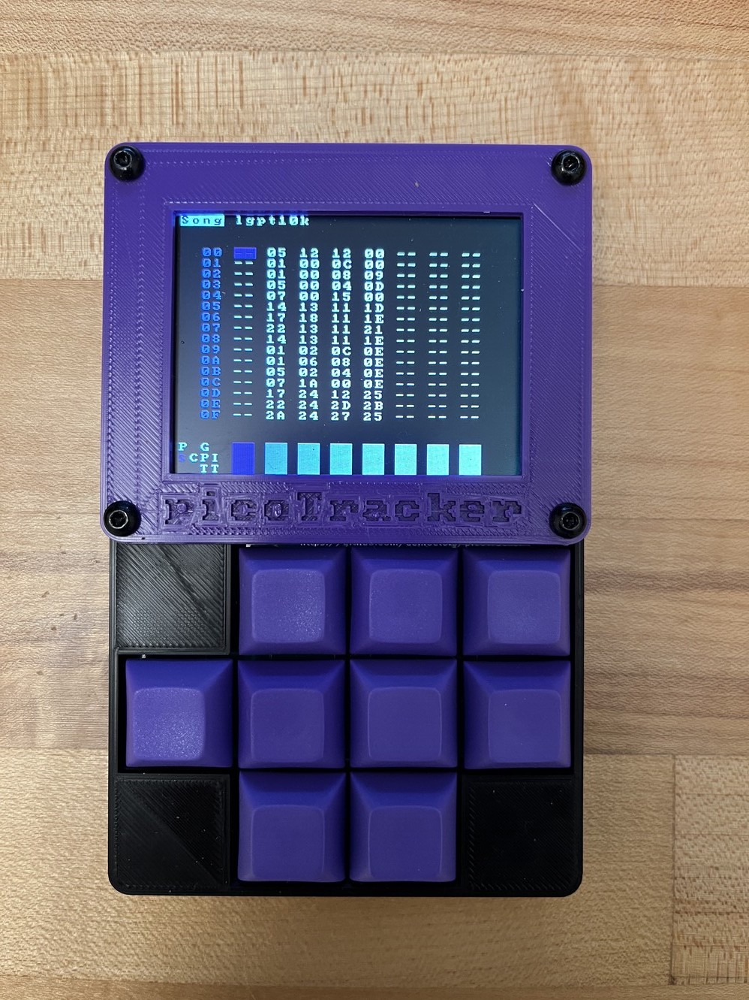
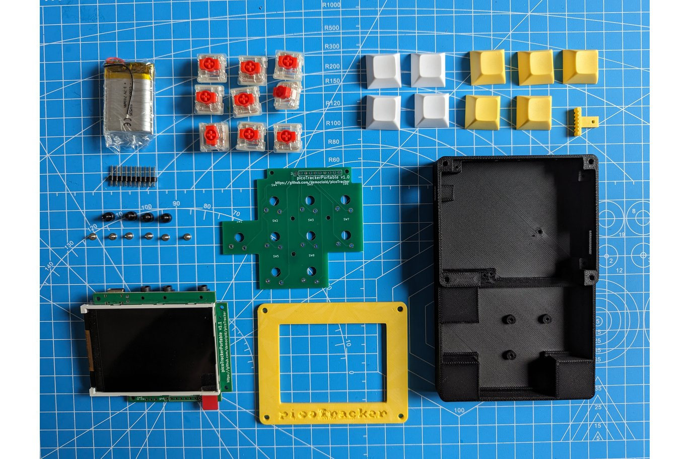
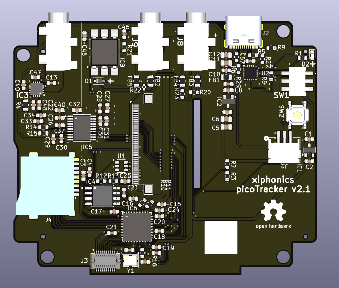
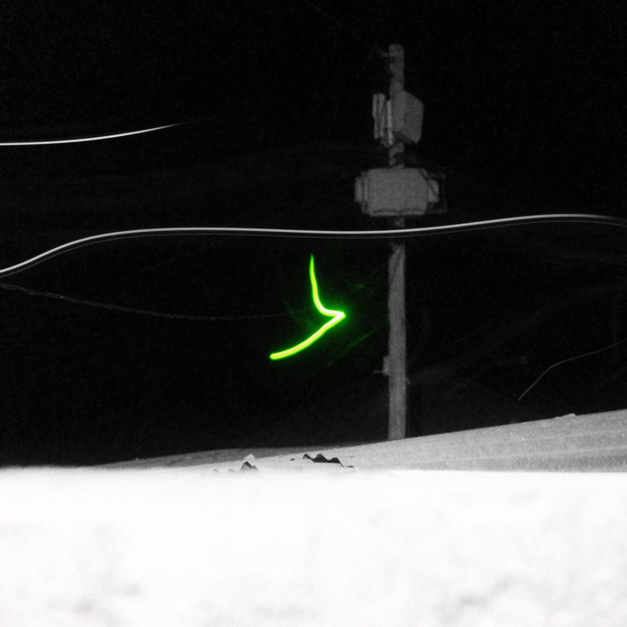

别只收藏成品照片
PCB 仓库提供主板、按键板及相关设计资料。可以先读接口与板间连接，再对照构建照片理解显示屏、按键与外壳的空间关系。设计文件开放，不意味着随意换屏幕、音频模块后仍与原固件相配。

AFTER HOURS · 晚刊 001图：democloid · picoTrackerPortable 制作记录（2023）。
2026.11.17 / TUE
HARDWARE · SOUND · CULTURE
picoTracker：从飞线原型到便携版
样本怎么选段、变速与重排
Vera Molnár：线条中的中断
一个音乐工具不只是一块能跑固件的板子。屏幕、键盘、存储、声音出口与外壳，都要在有限空间里找到位置。这一刊从开源硬件与作者经验进入，再看两个处理样本的角度，给文化短栏和一张唱片留一点位置。项目按既有资料选读，不当作今日新品。
它把 tracker 的纵向音序、样本乐器与按键操作放进小型硬件。对学开发板、想做声音项目的人，值得看的不只是最终成品，而是它公开了哪些层。
原始 picoTracker 使用 RP2040，提供样本与 MIDI 乐器、屏幕、存储和声音输出。当前 README 同时列出功能与限制：虽然界面有八个歌曲通道，原 RP2040 模型在不少情况下难以同时跑满八轨。样本载入 Flash 播放，存储卡空间并不直接等于可同时使用的样本内存。
固件与功能说明：固定快照 ↗本文区分原 RP2040、便携构建记录与后来的 Advance，不混用规格。

PCB 仓库提供主板、按键板及相关设计资料。可以先读接口与板间连接，再对照构建照片理解显示屏、按键与外壳的空间关系。设计文件开放，不意味着随意换屏幕、音频模块后仍与原固件相配。
如果想做的是把现场声音直接录进设备，要单独确认音频输入、麦克风与录音功能。README 特别把后续 Advance 的线路输入、内置麦克风等硬件列出来；不能据此给原 RP2040 版本补上不存在的能力。
先想清楚你要做“采样播放与编排”，还是“现场录音与处理”，再决定参照哪个版本。

democloid 在 2023 年的便携版制作记录里，回顾了一个常见的停滞：想升级声音、屏幕和容量，又想兼容原来的设计。后来，他从屏幕与机械键盘布局相近的尺寸出发，转向更小的便携结构。
作者先按元件尺寸设计外壳，再由外壳约束主 PCB。发现原电池续航不如预期后，他尝试更厚的电池，把 PCB 抬高两毫米，原来的打印键帽随之显得偏低，最后转向适合的新键帽。这里没有孤立的“电池升级”：一个尺寸变化，会传到板高、按键触感与外观。
作者原始制作记录 · 2023-06-22 ↗上述是作者经历，并非本刊复刻结果。
项目便携构建指南链接了 Floyd Steinberg 的套件装配视频，并强调液晶排线对齐与焊接是难点。先对照指南中的具体屏幕和板型，再用视频辅助理解动作；这里把它作为作者指南推荐的观看入口，未把视频中的声音或装配结果当成本刊实测。
Sonic Pi 的 sample 可以用 start: 与 finish: 选择素材区间，用 rate: 改变播放速率。起止参数是整段素材中的相对位置，不是秒数；改变速率还会改变时长与音高，不能简单当成保音高时间拉伸。
先取一段熟悉的素材，固定起止位置，只换速率；再固定速率，只换片段。这样更容易分清“换了素材”与“改了播放方式”各自带来的变化。
官方 Samples 教程 ↗本期为功能选读，未运行 Sonic Pi 音频渲染。
一段调用自己 WAV 的程序，不会自动包含那份录音。分享时可以同时交代文件路径、素材版本、采样格式与使用授权；对方拿到同名文件，也未必拿到了同一份声音。
官方教程也区分桌面应用与网页环境对外部样本的支持。打算使用自己的录音时，先查目标运行环境，再复制示例。午刊新增的 Audacity 标签轨条目，则可以作为整理原始素材的另一入口。
先看短线怎样形成秩序，再看空缺怎样改变它。Molnár 的《Interruptions》系列把规则、变化与删去部分线条放在同一张纸上；并非把机器产出的每一种结果都等同成作品。
Toledo Museum 的作品说明将其放在 1968 年开始使用计算机与绘图机的背景下，描述逐次改变参数的过程。NGA 馆藏的同系列作品定年 1969；两处页面对应不同版本，适合对照看“同一个方法”如何生成不同画面。

2026-10-02 · Electronic / Experimental
SLIKBACK × KMRU
四首作品的合作 EP。Gianmarco Del Re 的评论从两人的节奏与环境声实践切入；发行页附记简短，曲目与署名可由原页继续查阅。